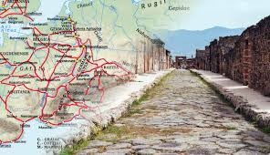
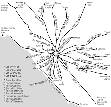

The Roman Road System

Introduction
The Roman road system was one of the greatest engineering achievements of the Roman Empire.
These roads connected cities, provinces, and military bases, allowing Rome to control and
maintain its vast territory. Many Roman roads were so well built that parts of them are still
used today.
Why Roman Roads Were Important
- Allowed Roman armies to move quickly and efficiently
- Improved communication across the empire
- Boosted trade and the economy
- Helped spread Roman culture, language, and laws
- Strengthened Roman control over conquered territories
Who Built the Roads?
Roman roads were mainly built by Roman soldiers. During times of peace, armies were often
assigned to road construction as a way to stay disciplined and productive. Skilled engineers
planned the routes, while laborers, slaves, and soldiers carried out the work.
How Roman Roads Were Built

Roman roads were built in layers to make them strong and long-lasting. The construction
process followed careful steps:
- The land was cleared and leveled
- A deep trench was dug for stability
- Large stones formed the base layer
- Smaller stones and gravel were added on top
- Flat paving stones created a smooth surface
Design Features
- Roads were usually straight to allow fast travel
- Slight curves helped water drain off the surface
- Ditches on the sides prevented flooding
- Milestones marked distances and directions
Famous Roman Roads
- Appian Way (Via Appia): One of the earliest and most important Roman roads
- Via Augusta: Connected parts of Spain and southern France
- Via Egnatia: Linked the eastern provinces of the empire
Legacy of Roman Roads
The Roman road system influenced modern transportation networks across Europe and beyond.
Many modern highways follow the same paths as ancient Roman roads, proving how advanced and
effective Roman engineering truly was. Home